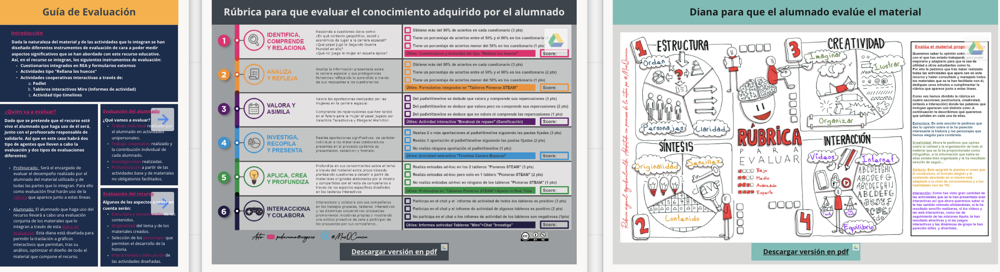

Rúbrica de Evaluación
La rúbrica de evaluación del presente recurso está diseñada para medir el progreso del alumnado en consonancia con los objetivos propuestos.

Al acceder a la rúbrica, haciendo clic sobre la imagen superior a través de este enlace, se posibilitará su descarga en formato en pdf y en versión editable.